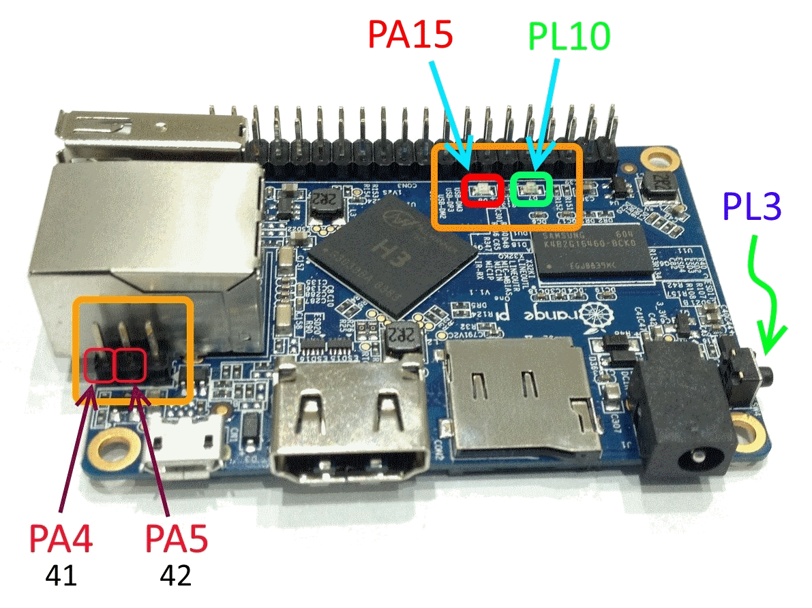

There is a 40-pins GPIO header on the Orange Pi boards.
Same as Raspberry Pi's one.
You can use 28 pins (of 40) for any input/output purposes.
GPIO pins count is enough for many CNC machines.
See the picture for a detailed pinout.

There are addition input/output pins/sockets/buttons on the board -
2 LEDs, 1 button,
2 USART pins (for debug) and a 24-pins camera socket.
You can use all of them for any purposes too.
Before any wiring you need to get a pin names from the LinuxCNC configuration.
This data can be found in the HAL files.
You can find such files in the config folder (there is a link to it on the desktop).
For example, you want to connect a stepper motor driver.
Scroll down the HAL file and find a table with pin names.
In this example the STEP signal (X axis) is connected to the pin 5 (PA12).
The DIR signal - to the pin 7 (PA6).
The (motor) ENABLE signal - to the pin 19 (PC0).
Take some wires and connect them using a scheme.
If you want to control a high voltage devices, you can use a multi relay module.
In this example the (spindle) ENABLE signal is connected to the pin 16 (PC4).
And the E-STOP signal is connected to the pin 3 (PA12).
The relay module has an optocouplers, so you can connect GPIO pins directly.